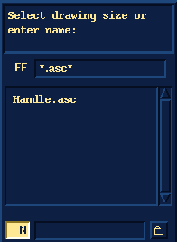
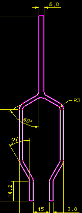
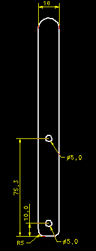

(Demonstrator 1)
| Next Step | Return to Table of Contents | Previous Step |

Open the Handle.asc drawing file
|  |  |
File, Export, To Solids, "Handle", Wireframe, pick geometry, Done, Wireframe, pick geometry, Done, Done
Export the required wireframe geometry. (NOTE:- You won't actually use this data, so don't worry about missing any geometry.)
File, Quit
Exit from drafting and return to ideas
| Next Step | Return to Table of Contents | Previous Step |